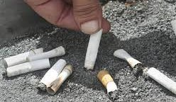
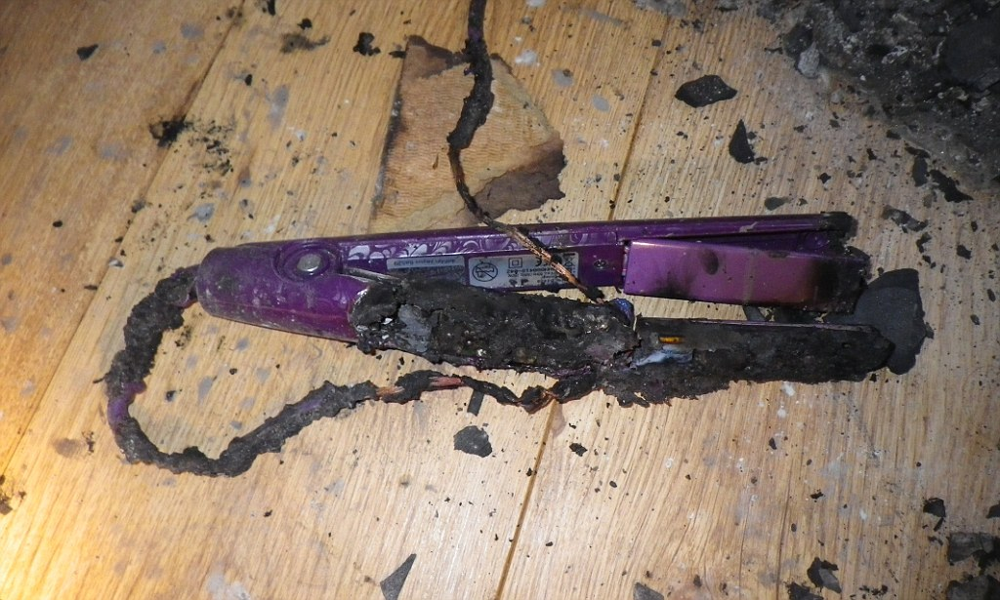
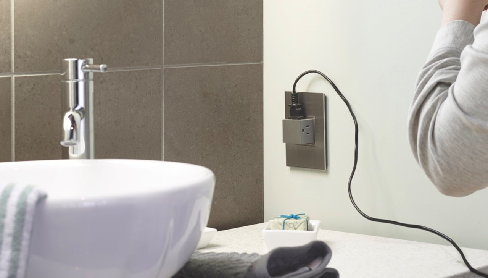
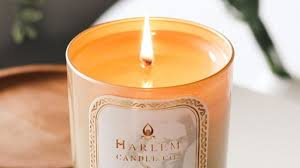
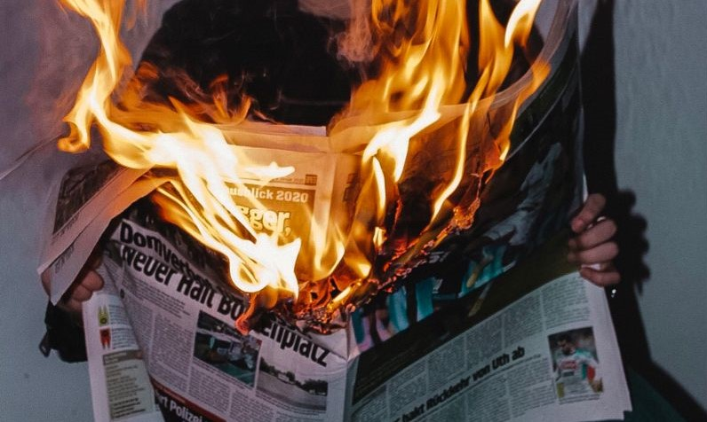
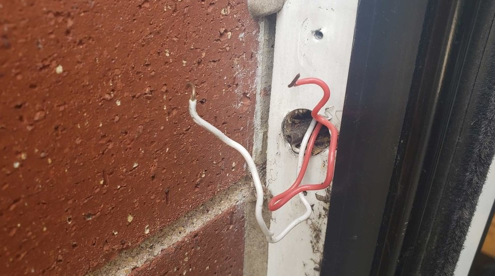
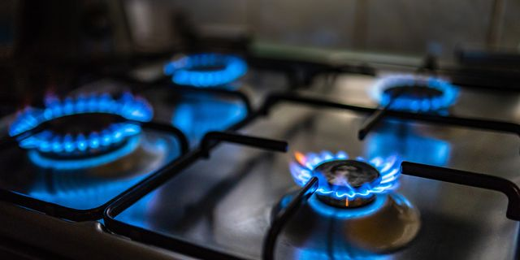
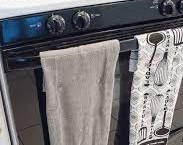

Firelight uses visual and responsive media to help people learn more about safety awareness- in a fun way! Below is the image of an unsafe house that could catch flames at any moment. Spot the hazards and click on them to see if your answer is correct. There are 8 answers.
Cigar |
Iron |
Outlet |
Candle |
|---|---|---|---|

You found the Cigar!A cigar is left unextinguished on the topmost floor. Cigarettes that have not been properly extinguished and disposed of cause one in 12 house fires in the UK of accidental house fires and over a third (36%) of deaths in house fires. |

You found the Iron!A hair straightening iron was left plugged in. Over 650,000 house fires in the UK have been caused by straighteners or curlers being left on. Always make sure to check that you have turned off styling tools once you have finished using them. |

You found the Outlet!An outlet is installed behind the toilet in the bathroom for some reason. There should be a 3m gap between any sockets and a bath/shower as dictated by the Building Regulations rules in the UK. Water getting into sockets can overwhelm its circuit, producing sparks and causing an electrical fire. |

You found the Candle!An open candle is left next to curtains. 950 house fires were caused by candles in 2020-21, that is nearly 3 per day. LED flameless candles are a great, and safe alternative. |
Newspaper |
Doorbell |
Stove |
Towel |

You found the Newspaper!The newspaper is too close to the open fire. The fireplace also doesn't seem to have a gate. It is recommended that you put a fire out 45 minutes before you leave the room in order to let the ashes cool whilst you are there to keep an eye out for any sparks or hazards. Watch out for materials such as paper, cotton, and viscose as they are highly flammable. |

You found the Doorbell!Or lack thereof. 53% of accidental house fires are caused by electrical faults, and over 700 injuries are caused by them each year. Just under 10% of accidental fires are caused specifically by faults in wires, cabling and plugs. |

You found the Stove!The stove as been left on. Cooking appliances are responsible for a whopping 46% of all accidental house fires per year. Over 7,500 fires were caused by cookers and 1,400 by heated stovetops left on between 2020-21. It is important to remember to check that ovens, microwaves, toastes, stoves, and all other kitchen appliances are turned off fully after cooking. |

You found the Towel!A towel is hung over a stovetop. Light and flammable kitchen items, like towels and rags, are responsible for 30% of kitchen fires yearly. These household items should not be stored or placed near elctrical kitchenware and heating elements, like ovens. Most importantly, they should not be near open flames. |